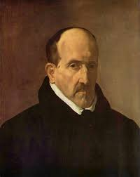

Lope de Vega

Félix Lope de Vega y Carpio(Madrid, 25 de noviembre de 1562 - Madrid, 27 de agosto de 1635) fue uno de los más importantes poetas y dramaturgos del siglo de Oro español y, por la extensión de su obra, uno de lo más prolíficos autores de la literatura universal.

Luis de Góngora
Luis de Góngora y Argote (Córdoba, 11 de julio de 1561 - Córdoba, 23 de mayo de 1627) fue un poeta y dramaturgo español del Siglo de Oro, máximo exponente de la corriente literaria conocida como culteranismo o gongorismo.